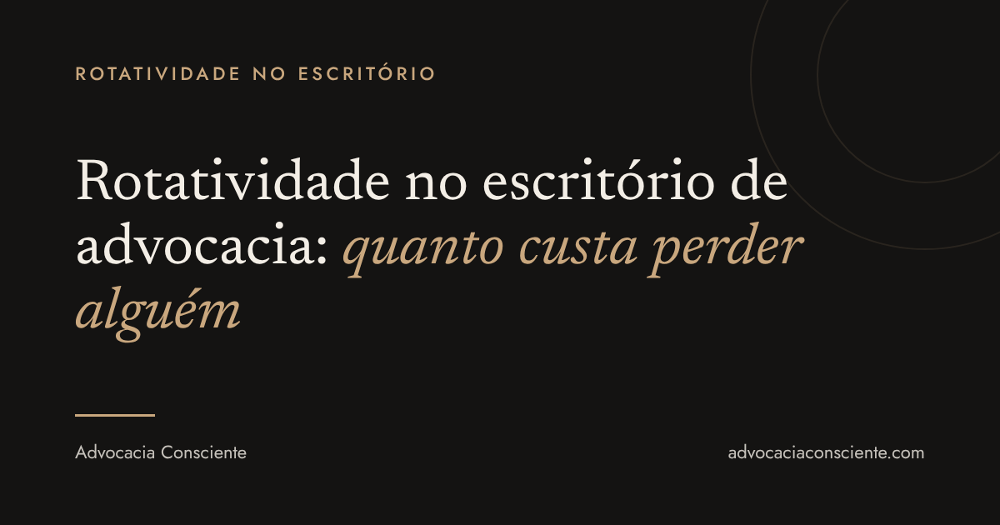

Mais do que parece na folha de pagamento. Nos Estados Unidos, um estudo da NALP de 2017 estimou entre US$ 200 mil e US$ 500 mil o custo de substituir um advogado júnior, somando custos diretos e produtividade perdida. No Brasil não há um número equivalente, mas a conta tem as mesmas partes.
O que entra na conta
Quando alguém pede demissão, o escritório não perde só uma pessoa. Perde, em regra:
- o recrutamento: anúncios, entrevistas e, muitas vezes, consultoria;
- as horas do sócio: para selecionar, treinar e revisar o trabalho de quem chega;
- a curva de aprendizado: meses até a pessoa nova conhecer os clientes, os processos e o jeito da casa;
- a memória dos casos: o que estava só na cabeça de quem saiu;
- a sobrecarga de quem fica: os prazos não esperam a vaga ser preenchida.
Nenhum desses itens aparece numa linha só da contabilidade. Por isso a rotatividade costuma ser subestimada.
Quanto os escritórios brasileiros perdem
Os dados públicos ainda são poucos. Numa pesquisa da consultoria BOLD HRO com 35 sócios e diretores de escritórios brasileiros, divulgada em 2024, 63% disseram ter rotatividade entre 10% e 20% da equipe por ano. É uma amostra pequena, mas dá uma ideia: num escritório de 20 pessoas, isso significa perder de 2 a 4 por ano.
Por que as pessoas saem
Salário pesa, mas raramente é o único motivo. Entre as razões mais citadas por quem estuda o mercado jurídico estão a falta de perspectiva de carreira, a pouca autonomia, a jornada rígida e a busca por qualidade de vida.
O cansaço também entra na conta. Num estudo da American Bar Association divulgado em setembro de 2026, com cerca de 37 mil advogados, 47,4% apresentaram nível alto de burnout.
Onde a NR-1 entra nessa história
Desde 26 de maio de 2026, a NR-1 pede que os riscos psicossociais entrem no gerenciamento de riscos ocupacionais. Sobrecarga, metas excessivas e falta de autonomia são justamente alguns desses riscos.
Ou seja: o mesmo mapeamento que a norma exige ajuda o escritório a ver, antes, onde está o risco de perder alguém.
Seu escritório está em dia com a NR-1? Baixe o checklist gratuito com 10 perguntas.
Baixar o checklistO que o escritório pode fazer agora
- Conversar antes da saída. Perguntar a quem está na equipe o que faria a pessoa ficar, e não só por que alguém saiu.
- Olhar a distribuição dos prazos. Quando sempre as mesmas pessoas carregam o escritório, a saída delas é questão de tempo.
- Deixar o caminho de carreira claro. O que é preciso para crescer ali, e em quanto tempo.
- Registrar o que aparecer. O que surgir nessas conversas pode entrar no gerenciamento de riscos da NR-1.
Perguntas frequentes
Existe um número oficial de rotatividade na advocacia brasileira?
Não encontramos. Os dados disponíveis vêm de pesquisas de consultorias, com amostras pequenas.
Rotatividade baixa significa equipe saudável?
Não necessariamente. Alguém pode ficar e estar esgotado. Vale olhar também afastamentos, faltas e o clima da equipe.
O escritório pequeno também precisa se preocupar?
Sim. Em equipes pequenas, uma única saída pesa mais, porque há menos gente para absorver o trabalho.
Baixe o checklist da NR-1 para escritórios de advocacia.
Baixar o checklistConteúdo educativo. Não substitui orientação jurídica ou acompanhamento de um profissional de saúde.
Fontes
- Custo de substituir um advogado júnior (US$ 200 mil a US$ 500 mil, NALP 2017, citado pelo Above the Law em 2022): Thomson Reuters, out. 2022
- Pesquisa BOLD HRO com 35 sócios e diretores (63% com rotatividade de 10% a 20%): Folha Vitória, 27/07/2024
- Motivos de saída no mercado jurídico (carreira, autonomia, jornada, qualidade de vida): Análise Editorial
- Burnout em 47,4% de cerca de 37 mil advogados: American Bar Association, set. 2026
- NR-1 e riscos psicossociais: artigo do AC sobre a NR-1
Fontes consultadas em 21/10/2026.

Advogada, autora do livro Advocacia Consciente (Freitas Bastos) e criadora do Programa Advocacia Consciente (PAC).